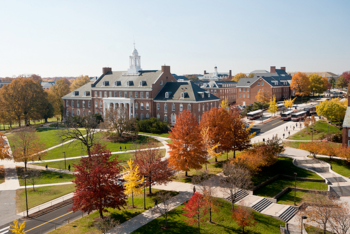
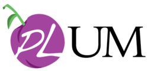

TFP 2016
The 17th Symposium on Trends in Functional Programming
Local information
Conference venue
The conference will take place at the University of Maryland in College Park, Maryland.
University of Maryland at College Park
Founded in 1856, UMD is the flagship public university of Maryland, serving over 37,000 students just outside Washington, D.C.
The campus is 1,250 acres (5.1 km2) and noted for its red-brick, Georgian architecture, large central lawn, and 400 acres (1.6 km2) of urban forest.
Functional Programming in the DC Region
The Washington, D.C. region is home to a large, thriving functional programming community. There are frequent meet-ups for FP languages and several authors of FP books are based in D.C.
The lab for Programming Languages at the University of Maryland (PLUM) is an active research group comprised of nearly 20 researchers with a strong emphasis on functional languages.
Within a four hour drive of UMD are researchers at CMU, Penn, Johns Hopkins, Princeton, and many more.
D.C. is home to several national laboratories and funding agencies that use or support FP research.
Washington, DC
Washington, D.C. is the national capital of the United States. It is home to a number of national monuments, parks, museums, libraries, and the national zoo, all of which have free admission.
Getting to DC: By plane
DC is served by three major airports with many direct international flights:
- DCA - Washington National Airport: Located near downtown Washington, DC, this is the most convenient airport to fly in to. It is located on the WMATA metro Yellow line, which runs to UMD during peak hours, and requires only a single transfer to the Green line during off-peak hours. International flights into DCA are pretty limited (but there are some).
- IAD - Dulles International Airport: Located about 30 miles West of Washington, DC. this is the largest and most international airport in the region with direct flights to most major international hubs in the world. Travelling from Dulles to DC or College Park will require a long and expensive cab ride, a shuttle bus, or a somewhat convoluted trip on the WMATA public transportation system.
- BWI - Baltimore-Washington International Airport: Located between Washington, DC and Baltimore, MD, this airport is about 25 miles Northeast of College Park. It is a smaller airport, but include some carriers (such as Southwest Airlines) not available at DCA or IAD.
Getting to DC: By train
DC is in the "Northeast Corridor", one of the few regions of the US with decent train service from Amtrak, which serves Washington Union station, located in downtown DC and on the WMATA metro Red line. It is fairly pleasant to travel to DC from Philadelphia, New York, Boston, and points in between by Amtrak train.
On a more regional scale, Union Station is also served by the Maryland Area Regional Commuter (MARC) train and the Virginia Railway Express (VRE) train .
Getting around DC
There is an excellent public transportation system and regional train system. There are many taxis available.
The city is compact, walkable, and bike-friendly. The Capital Bikeshare program makes it easy and convenient to navigate the city by bicycle.
Driving a car in the city is not advised.
Travelling to College Park from DC
College Park, Maryland is in the Washington DC area (inside the beltway) and accessible from DC by the public subway system.
Take the WMATA Green line to the College Park–UMD station. During peak hours, the Yellow Line "rush plus" trains also service the College Park–UMD station.
From the College Park station, you can walk 1.3 miles (2.1km) to campus, or you can take the UMD Shuttle Bus #104, which boards in the metro station parking lot. Exit the bus at the Glenn L. Martin Wind Tunnel, which is next door to the Computer Science Department in the A. V. Williams Building.
Accomodations
More details will appear soon.